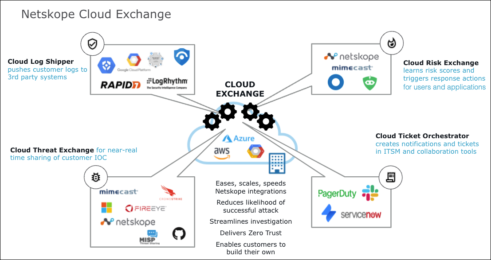

About Cloud Exchange
Cloud Exchange comes with four primary feature modules that can be turned on or off as needed: Threat Exchange, Ticket Orchestrator, Risk Exchange, and Log Shipper.
|  |
CE is supported by Netskope, though individual plugins leverage functionality provided by 3rd-party partners. While CE comes at no cost to users, CE will only work if the attached system(s) is configured with entitlements that enable the applicable API queries and data flows.
Each plugin’s software and subscription requirements are defined in each respective configuration guide. This guide focuses on the complete CE platform with the four primary modules. There are two privilege levels in CE, Admin (full privileges) and User (limited privileges).
Prerequisites
Docker is required to install the Netskope CE application. Ensure the following commands are available:
docker
Execute the command shown below to verify if the command is available. If available, the command execution will output the path where docker commands are available.
$ which dockerdocker-compose
Execute the command shown below to verify if the command is available. If available, the command execution will output the path where docker commands are available.
$ which docker-compose
HTTP Proxy Details
In case your network expects the outgoing API to be routed via the proxy, make sure you have these details about your HTTP Proxy:
Proxy IP/Hostname
Proxy Port
Credentials.
System Requirements
This section provides recommendations and guidance for selecting the server/VM/Instance where Netskope Cloud Exchange is going to be installed.
Minimum System Requirements
4 GB of Memory
2 vCPU
20 GB of Storage
Ubuntu 18.04 or CentOS 8 (the only two Netskope has qualified)
Docker
Sizing the System Based on Anticipated Usage
Factors to consider:
Total number of configured plugin sources.
Total number of Indicators expected to be stored in the database. This factor defines the storage requirements.
Netskope Cloud Exchange has a worker-based scheduling mechanism to cater to the data pull/push for multiple data sources. The number of workers determines how many data sources will be actively fetching data/sharing data concurrently. The total number of worker processes should be equal to the number of cores. If the expectation is to fetch data frequently with multiple data sources, consider increasing the number of cores.
The table below provides recommendations for standard deployments:
Workload Details | Memory (GBs) | Number of Cores | Storage (GBs) |
|---|---|---|---|
Up to 2 configured plugins. | 2 | 1 | 20 |
Up to 4 configured plugins. (~1 million IoCs) | 4 | 2 | 20 |
Up to 6 configured plugins. (~1 million IoCs) | 4 | 2-4 | 20 |
Up to 10 configured plugins. (~2 million IoCs) | 6 | 4-6 | 40 |